ตอนนี้แนะนำระบบข้อมูลบุคลากร หรือ HR ที่เก็บประวัติของครูและบุคลากรทุกคนไว้ที่เดียว และเชื่อมกับบัญชีผู้ใช้ ผังบริหาร และคำสั่งแต่งตั้งของโรงเรียน
1.1 เปิดระบบ
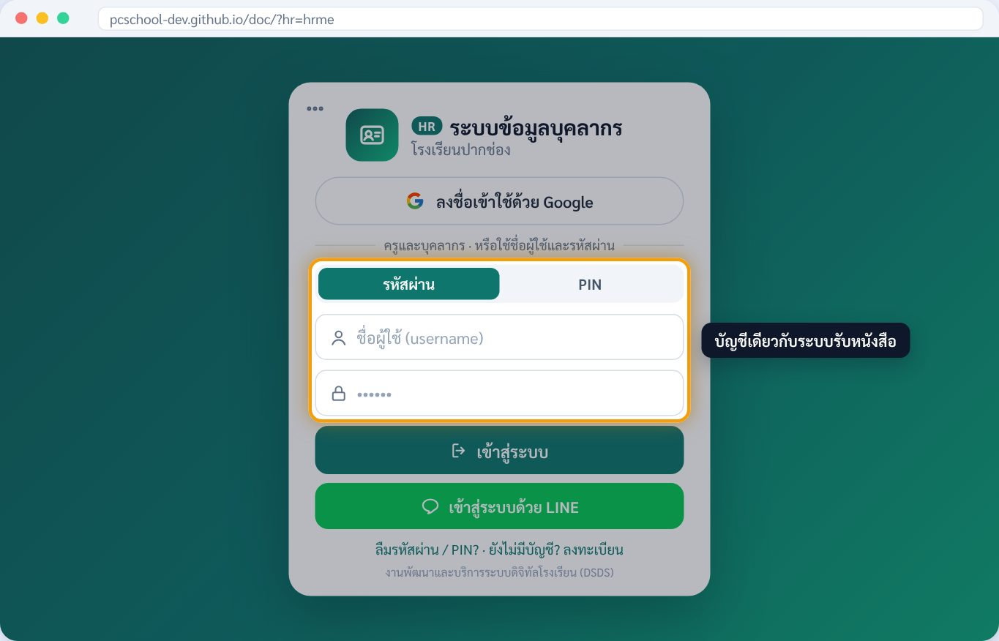
เปิดลิงก์ระบบข้อมูลบุคลากร → หน้าเข้าสู่ระบบสีเขียว ป้าย HR · บัญชีเดียวกับระบบรับหนังสือ
เปิดลิงก์ระบบข้อมูลบุคลากรที่โรงเรียนแจ้งไว้ จะเห็นหน้าเข้าสู่ระบบสีเขียว มีป้าย HR ใช้บัญชีเดียวกับระบบรับหนังสือราชการ ไม่ต้องสมัครใหม่
1.2 เข้าสู่ระบบ
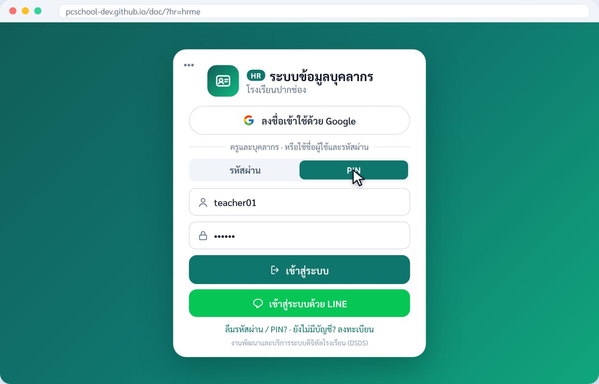
ชื่อผู้ใช้ + รหัสผ่าน หรือ PIN → เข้าสู่ระบบ
พิมพ์ชื่อผู้ใช้และรหัสผ่านเดิม หรือแตะแท็บ PIN เพื่อใช้ PIN หกหลักแทนก็ได้ แล้วกดเข้าสู่ระบบ
1.3 เข้าด้วย Gmail
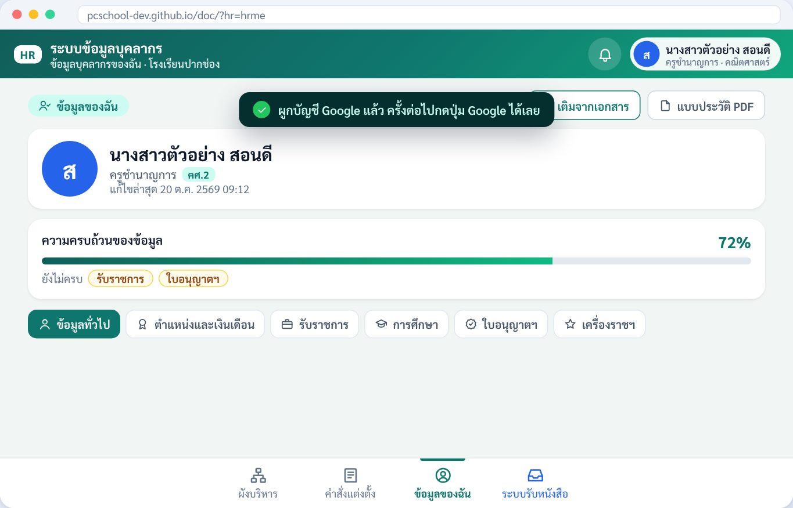
ปุ่ม Google → ครั้งแรกยืนยันชื่อผู้ใช้ + รหัสผ่านหนึ่งครั้ง → ครั้งต่อไปกดปุ่มเดียว
หรือกดปุ่ม Google แล้วเลือก Gmail ของคุณ ครั้งแรกระบบจะขอชื่อผู้ใช้และรหัสผ่านหนึ่งครั้ง เพื่อผูกบัญชีไว้ ครั้งต่อไปกดปุ่ม Google ก็เข้าได้ทันที
1.4 เมนูด้านล่าง
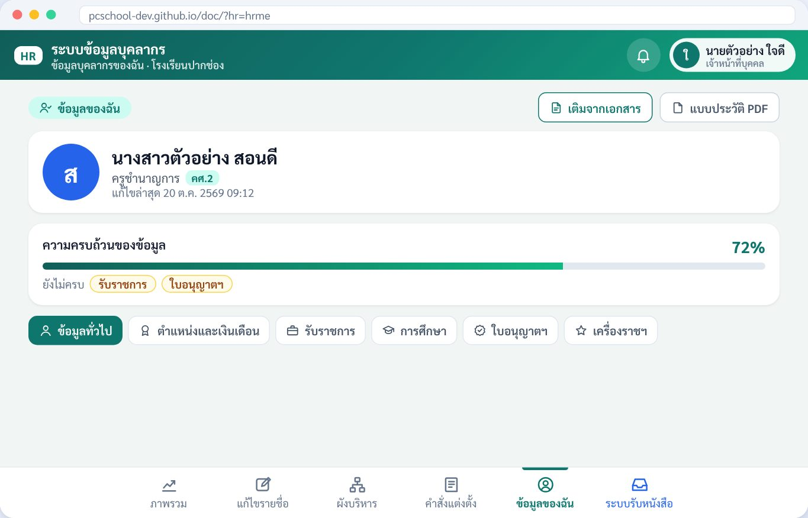
ครู: ผังบริหาร · คำสั่งแต่งตั้ง · ข้อมูลของฉัน · ระบบรับหนังสือ | เจ้าหน้าที่บุคคล: + ภาพรวม · รายชื่อ
เมนูด้านล่างของครูมี ผังบริหาร คำสั่งแต่งตั้ง ข้อมูลของฉัน และปุ่มกลับไประบบรับหนังสือ ส่วนเจ้าหน้าที่บุคคล จะเห็นเมนูภาพรวม และแก้ไขรายชื่อ เพิ่มมาอีกสองเมนู
1.5 ผังบริหาร
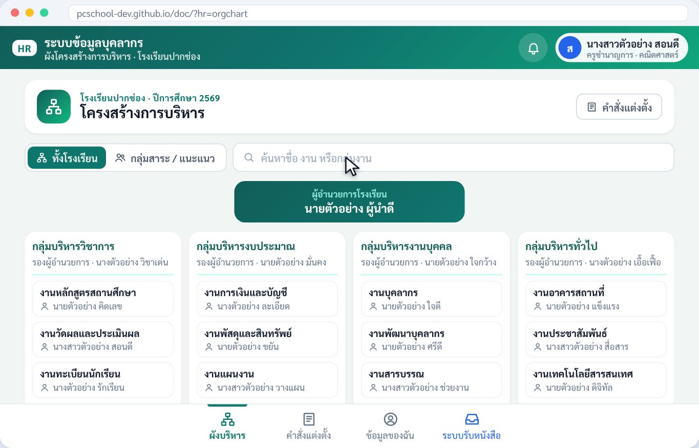
ผังบริหาร › กลุ่มบริหาร · งาน · หัวหน้างาน | กลุ่มสาระ / แนะแนว › หัวหน้าและครูในกลุ่ม
ผังบริหาร แสดงกลุ่มบริหาร งาน และหัวหน้าแต่ละงาน ค้นหาชื่อหรืองานได้จากช่องค้นหา กดกลุ่มสาระ หรือแนะแนว เพื่อดูหัวหน้าและครูในแต่ละกลุ่ม
1.6 คำสั่งแต่งตั้ง
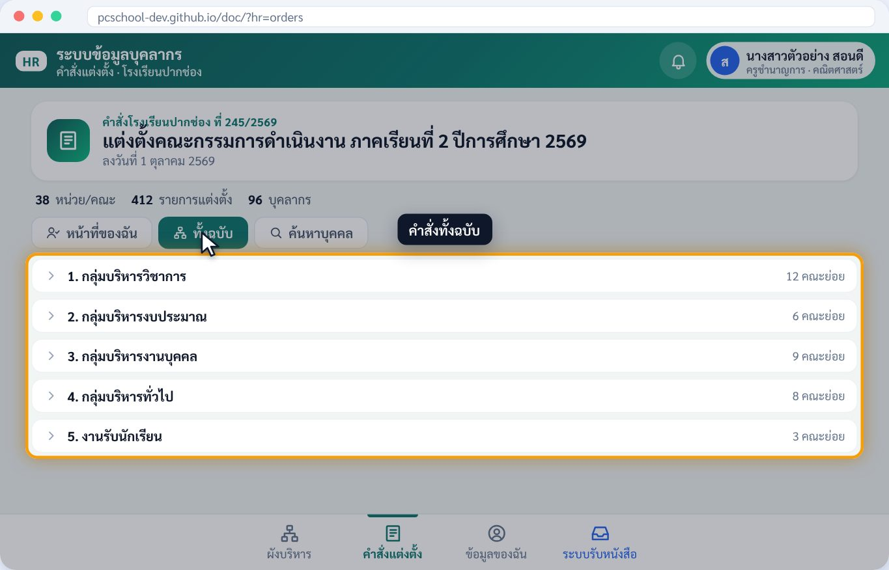
คำสั่งแต่งตั้ง › หน้าที่ของฉัน · ทั้งฉบับ · ค้นหาบุคคล
คำสั่งแต่งตั้ง เปิดมาที่แท็บหน้าที่ของฉัน รวมทุกคณะที่คุณได้รับแต่งตั้งในคำสั่งที่ประกาศใช้ ดูคำสั่งทั้งฉบับ หรือค้นหาหน้าที่ของคนอื่น ได้จากแท็บถัดไป
1.7 แจ้งเตือน
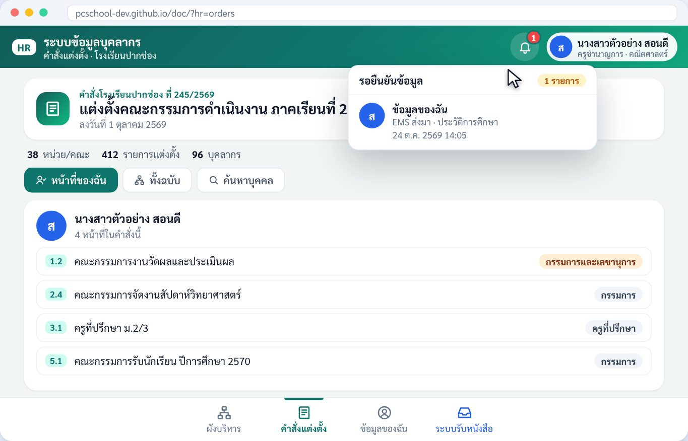
กระดิ่งมุมขวาบน = ข้อมูลจากระบบอื่นรอคุณยืนยัน → แตะรายการ → ข้อมูลของฉัน
กระดิ่งที่มุมขวาบน จะมีตัวเลข เมื่อระบบอื่น เช่น EMS ส่งข้อมูลของคุณมารอยืนยัน แตะที่รายการ ระบบจะพาไปหน้าข้อมูลของฉันทันที
สรุป ใช้บัญชีเดียวกับระบบรับหนังสือ เข้าด้วยรหัสผ่าน PIN หรือ Gmail ก็ได้ ดูผังบริหารและหน้าที่ตามคำสั่งจากเมนูด้านล่าง ตอนต่อไป มาดูการกรอกข้อมูลของฉัน
ตอนนี้มาดูหน้าข้อมูลของฉัน ที่ครูและบุคลากรทุกคนกรอกและแก้ประวัติของตัวเองได้ ตั้งแต่ข้อมูลทั่วไป ตำแหน่ง จนถึงการพิมพ์แบบประวัติ
2.1 ความครบถ้วน
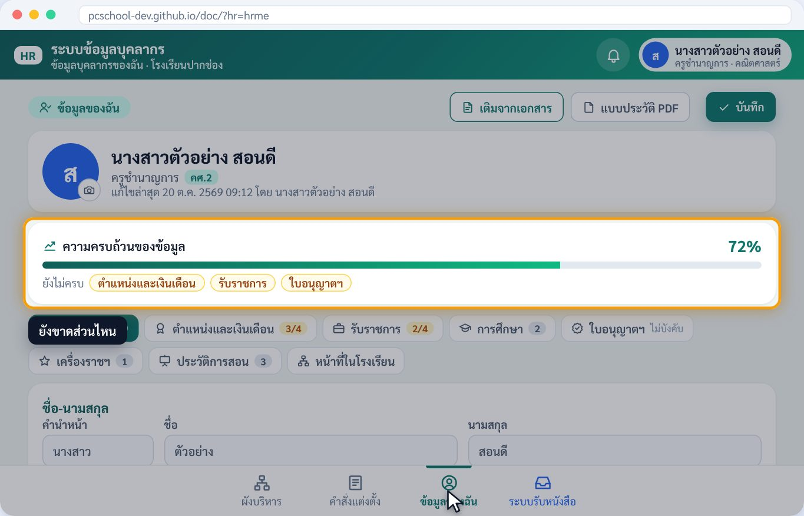
ข้อมูลของฉัน › แถบความครบถ้วน → แตะชื่อส่วนที่ยังขาด → ไปกรอกได้เลย
กดเมนูข้อมูลของฉัน ด้านบนเป็นชื่อ ตำแหน่ง และอันดับ คศ. ถัดมาคือแถบความครบถ้วน บอกว่ายังขาดส่วนไหน แตะชื่อส่วนนั้น เพื่อไปกรอกได้ทันที
2.2 แท็บข้อมูล
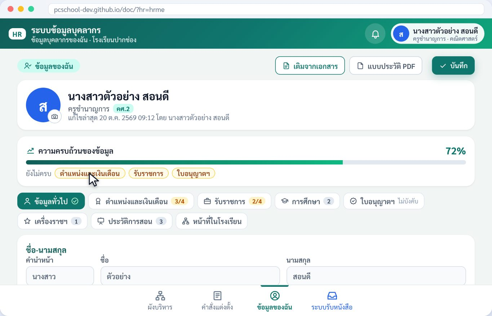
ตัวเลขบนแท็บ = กรอกแล้วกี่ช่อง · ✓ เขียว = ครบ · “ไม่บังคับ” = กรอกหรือไม่ก็ได้
ข้อมูลแบ่งเป็นแท็บ ตัวเลขบนแท็บบอกว่ากรอกแล้วกี่ช่อง เครื่องหมายถูกสีเขียวคือครบแล้ว ส่วนแท็บที่เขียนว่าไม่บังคับ จะกรอกหรือไม่ก็ได้
2.3 ข้อมูลทั่วไป
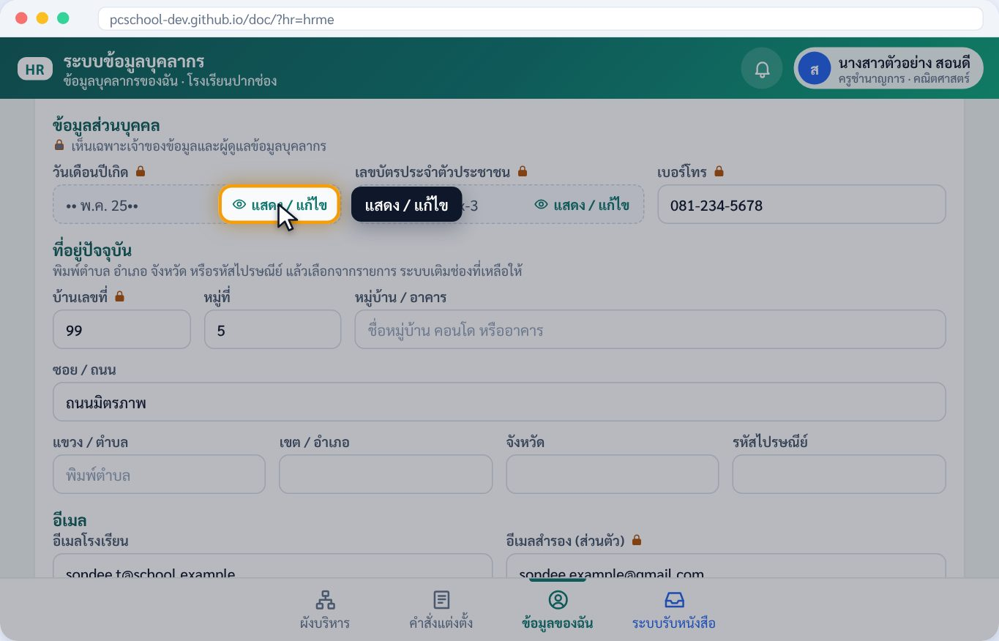
ข้อมูลส่วนบุคคล (รูปกุญแจ) เห็นเฉพาะคุณและผู้ดูแลข้อมูลบุคลากร · เก็บแบบเข้ารหัส
แท็บข้อมูลทั่วไป ช่องที่มีรูปกุญแจ เช่น เลขบัตรประชาชน วันเกิด และเบอร์โทร เห็นเฉพาะคุณและผู้ดูแลข้อมูลบุคลากร ระบบเข้ารหัสเก็บไว้ กดแสดงเมื่อต้องการดูค่าเต็ม
2.4 ที่อยู่
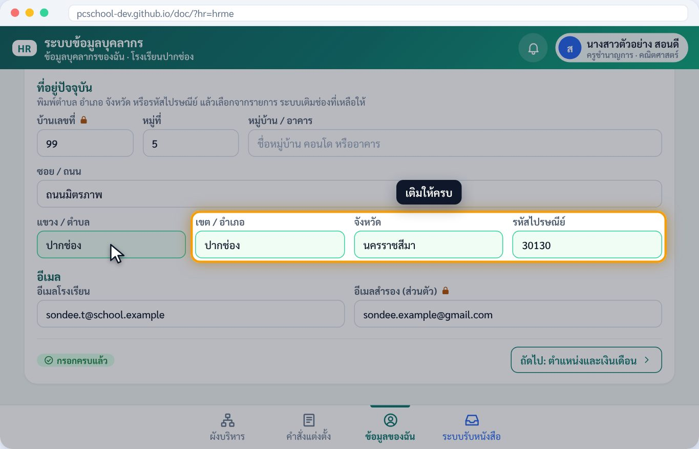
ที่อยู่: พิมพ์ตำบล อำเภอ หรือรหัสไปรษณีย์ → เลือกจากรายการ → ระบบเติมช่องที่เหลือ
ช่องที่อยู่ พิมพ์ชื่อตำบล อำเภอ หรือรหัสไปรษณีย์ แล้วเลือกจากรายการ ระบบจะเติมตำบล อำเภอ จังหวัด และรหัสไปรษณีย์ให้ครบ
2.5 ตำแหน่ง
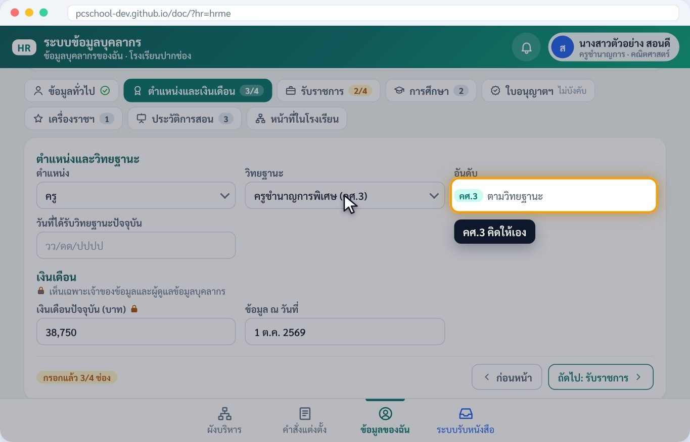
ตำแหน่งและเงินเดือน › เลือกตำแหน่ง + วิทยฐานะ → อันดับ คศ. คิดให้เอง · ปุ่ม “ถัดไป” ท้ายแท็บ
แท็บตำแหน่งและเงินเดือน เลือกตำแหน่งและวิทยฐานะ อันดับ คศ. ระบบคิดให้เอง กดถัดไปที่ท้ายแท็บ เพื่อไปส่วนต่อไปได้เลย
2.6 บันทึก
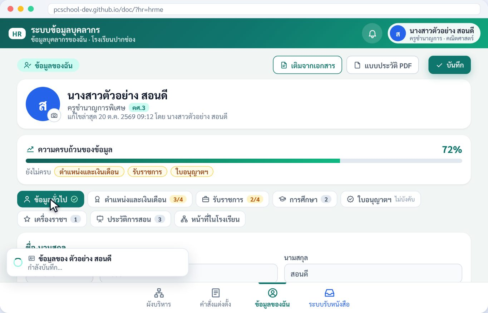
บันทึก → ทำงานต่อได้ทันที · ถาดมุมซ้ายล่าง: กำลังบันทึก… → บันทึกแล้ว
กดบันทึกแล้วทำงานต่อได้ทันที ไม่ต้องรอ ระบบบันทึกอยู่เบื้องหลัง ดูสถานะได้ที่ถาดมุมซ้ายล่าง ขึ้นว่าบันทึกแล้วเมื่อเสร็จ
2.7 ถ้าบันทึกไม่สำเร็จ
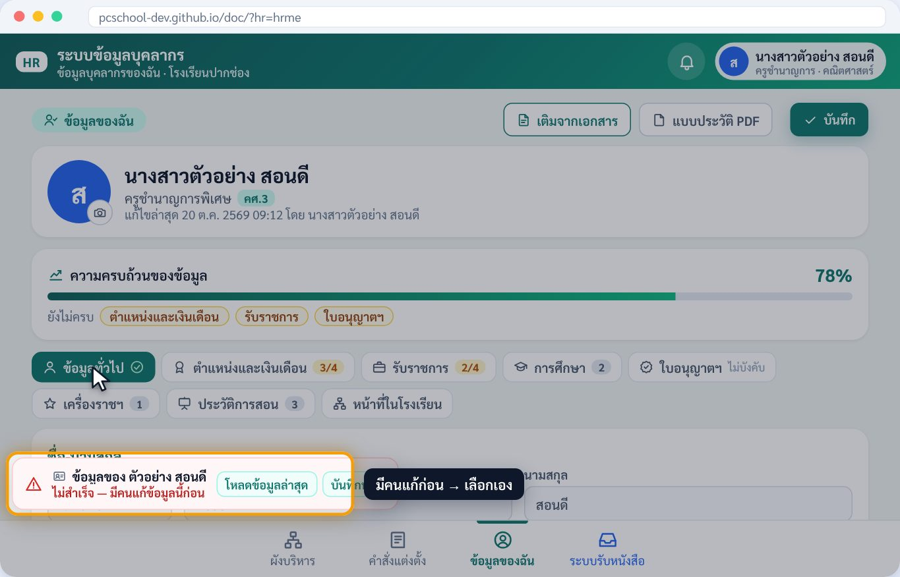
เน็ตหลุด → “ลองใหม่” (ข้อมูลยังอยู่) · มีคนแก้ก่อน → “โหลดข้อมูลล่าสุด” หรือ “บันทึกทับ”
ถ้าเน็ตหลุด ถาดจะขึ้นปุ่มลองใหม่ ข้อมูลที่แก้ยังอยู่ไม่หาย และถ้ามีคนแก้ข้อมูลเดียวกันไปก่อน เลือกได้ว่าจะโหลดข้อมูลล่าสุด หรือบันทึกทับ
2.8 แบบประวัติ PDF
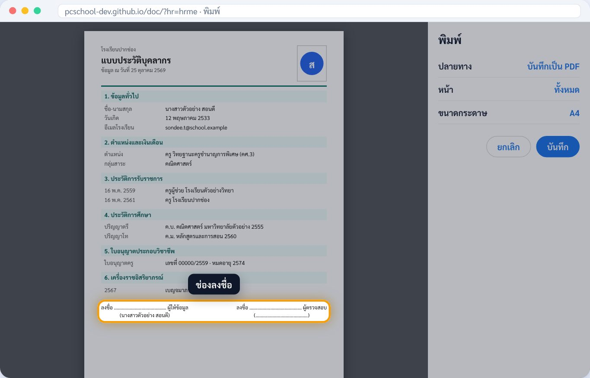
แบบประวัติ PDF → ครบ 6 หัวข้อ + ช่องลงชื่อ → พิมพ์ หรือบันทึกเป็น PDF
ต้องการเอกสาร กดแบบประวัติ PDF จะได้แบบประวัติครบทุกหัวข้อ พร้อมช่องลงชื่อผู้ให้ข้อมูลและผู้ตรวจสอบ สั่งพิมพ์ หรือบันทึกเป็นไฟล์ PDF ได้
สรุป ดูแถบความครบถ้วนว่ายังขาดอะไร กรอกทีละแท็บ กดบันทึกแล้วทำงานต่อได้เลย และพิมพ์แบบประวัติได้ทุกเมื่อ ตอนต่อไปมาดูประวัติการศึกษา ใบอนุญาต และอื่น ๆ
ตอนนี้มาดูแท็บประวัติต่าง ๆ ในข้อมูลของฉัน ทั้งการรับราชการ การศึกษา ใบอนุญาต และเครื่องราชฯ รวมถึงข้อมูลที่ระบบเติมให้เอง และการยืนยันข้อมูลจากระบบอื่น
3.1 รับราชการ
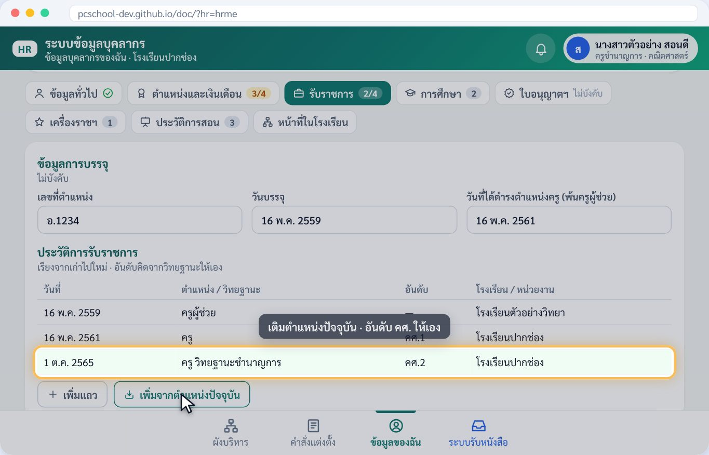
รับราชการ › เลขที่ตำแหน่ง · วันบรรจุ · ประวัติทีละแถว · “เพิ่มจากตำแหน่งปัจจุบัน”
แท็บรับราชการ กรอกเลขที่ตำแหน่งและวันบรรจุ แล้วเพิ่มประวัติทีละแถว กดเพิ่มจากตำแหน่งปัจจุบัน ระบบเติมตำแหน่งและวิทยฐานะตอนนี้ให้ อันดับ คศ. คิดให้เอง
3.2 การศึกษา
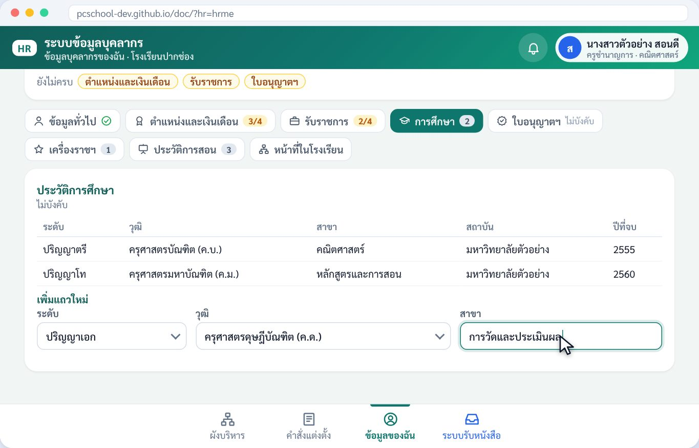
การศึกษา › ระดับ → วุฒิ → สาขา (เลือกจากรายการ หรือ “อื่น ๆ” แล้วพิมพ์เอง)
แท็บการศึกษา เลือกระดับ แล้วเลือกวุฒิและสาขาจากรายการ ถ้าไม่มีวุฒิที่ต้องการ เลือกอื่น ๆ แล้วพิมพ์เองได้
3.3 ใบอนุญาต
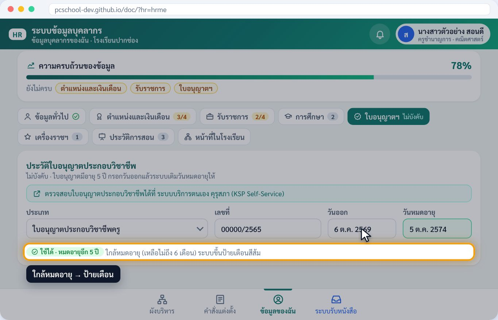
ใบอนุญาตฯ › กรอกวันออก → วันหมดอายุ (5 ปี) เติมให้ · ใกล้หมดอายุมีป้ายเตือน
แท็บใบอนุญาตประกอบวิชาชีพ กรอกวันออก ระบบเติมวันหมดอายุห้าปีให้เอง เมื่อใกล้หมดอายุจะมีป้ายเตือน ตรวจกับระบบของคุรุสภาได้จากลิงก์ด้านบน
3.4 เครื่องราชฯ
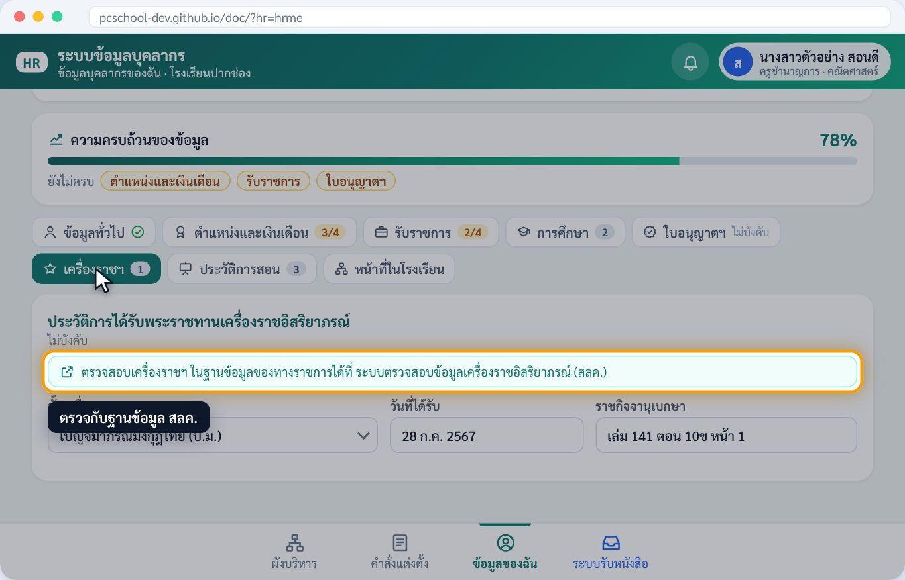
เครื่องราชฯ › ชั้น · วันที่ได้รับ · ราชกิจจานุเบกษา · ตรวจกับฐานข้อมูล สลค. ได้
แท็บเครื่องราชอิสริยาภรณ์ เลือกชั้นจากรายการ ใส่วันที่ได้รับ และเลขราชกิจจานุเบกษา ตรวจสอบกับฐานข้อมูลของ สลค. ได้จากลิงก์ด้านบนเช่นกัน
3.5 เติมจากเอกสาร
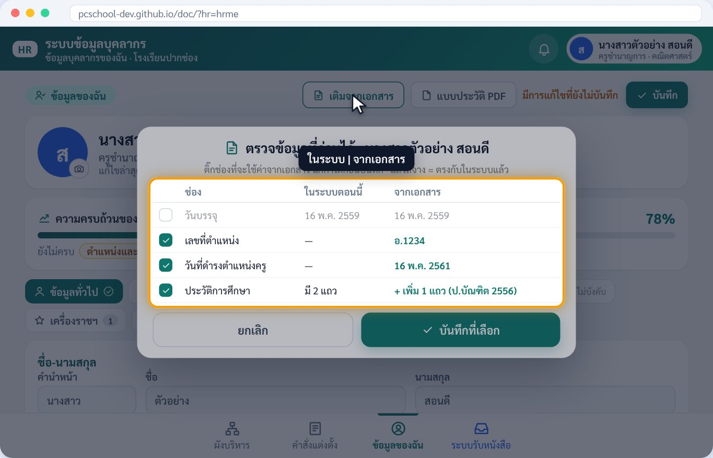
เติมจากเอกสาร › เลือก PDF / รูป → เทียบ “ในระบบ” กับ “จากเอกสาร” → ติ๊กช่องที่จะใช้
มีแบบประวัติเดิมเป็นไฟล์ PDF หรือรูป กดเติมจากเอกสาร ระบบอ่านค่าแล้วแสดงเทียบกับข้อมูลในระบบ ติ๊กช่องที่จะใช้ แก้ค่าได้ก่อนบันทึก
3.6 ประวัติการสอน
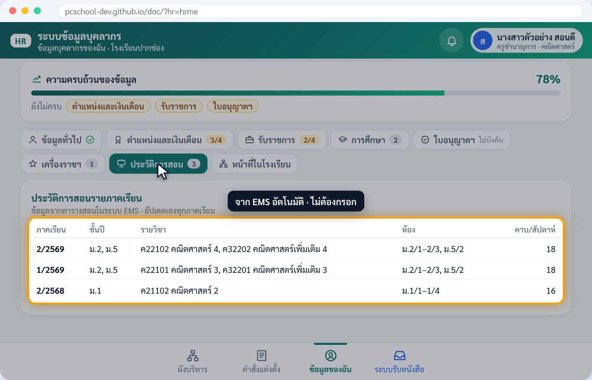
ประวัติการสอน › มาจากตารางสอนใน EMS ทุกภาคเรียน · ชั้น รายวิชา ห้อง คาบ/สัปดาห์
แท็บประวัติการสอน ระบบดึงจากตารางสอนใน EMS ทุกภาคเรียนเอง บอกชั้นปี รายวิชา ห้อง และจำนวนคาบต่อสัปดาห์ ไม่ต้องกรอกเอง
3.7 หน้าที่ในโรงเรียน
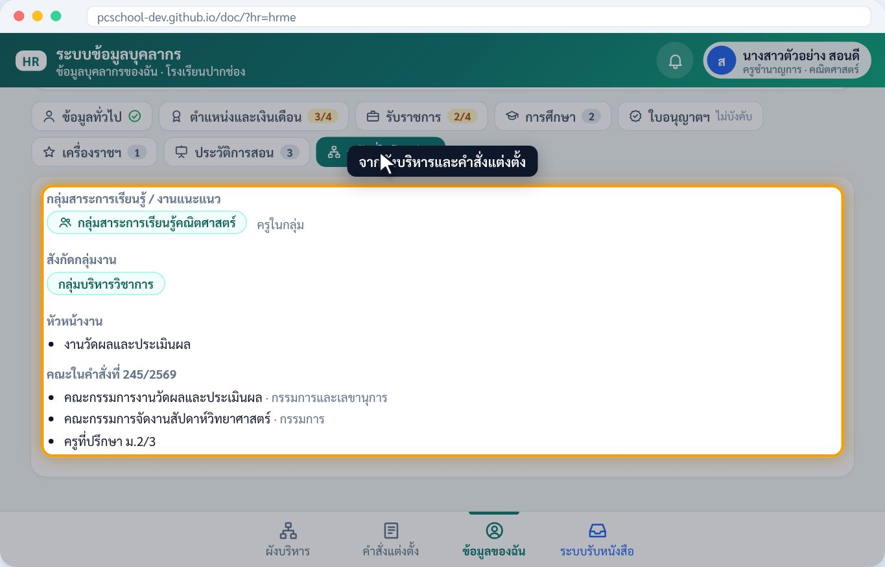
หน้าที่ในโรงเรียน › กลุ่มสาระ · กลุ่มงาน · หัวหน้างาน · คณะในคำสั่งแต่งตั้ง
แท็บหน้าที่ในโรงเรียน รวมกลุ่มสาระ กลุ่มงาน งานที่เป็นหัวหน้า และคณะในคำสั่งแต่งตั้ง ข้อมูลมาจากผังบริหารและคำสั่งโดยตรง
3.8 ยืนยันข้อมูล
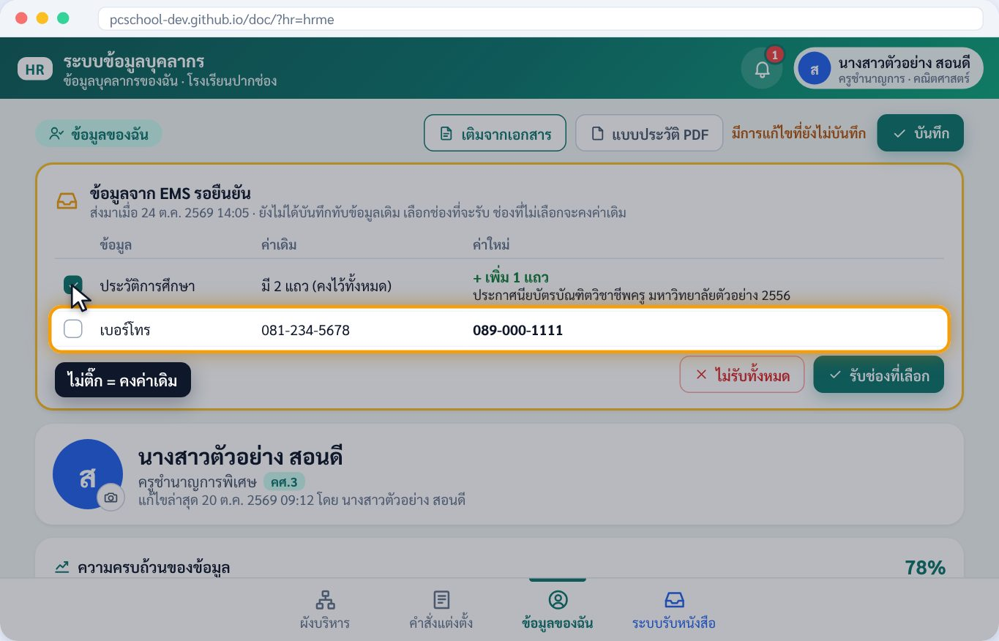
การ์ดสีเหลือง = ข้อมูลจากระบบอื่น · ค่าเดิม | ค่าใหม่ → ติ๊กช่องที่รับ → “รับช่องที่เลือก”
ถ้าระบบอื่น เช่น EMS ส่งข้อมูลใหม่มา จะขึ้นการ์ดสีเหลืองด้านบน เทียบค่าเดิมกับค่าใหม่ ติ๊กช่องที่จะรับ แล้วกดรับช่องที่เลือก ช่องที่ไม่ติ๊กจะคงค่าเดิมไว้
สรุป กรอกประวัติทีละแท็บ หรือเติมจากเอกสารเดิมก็ได้ ประวัติการสอนและหน้าที่ ระบบเติมให้เอง และอย่าลืมตรวจการ์ดสีเหลือง เมื่อมีข้อมูลรอยืนยัน
ตอนนี้สำหรับเจ้าหน้าที่บุคคลและผู้ดูแลข้อมูล มาดูหน้าภาพรวมบุคลากร และหน้าแก้ไขรายชื่อ ที่แก้ข้อมูลหลายคนได้ในหน้าเดียว
4.1 ภาพรวม
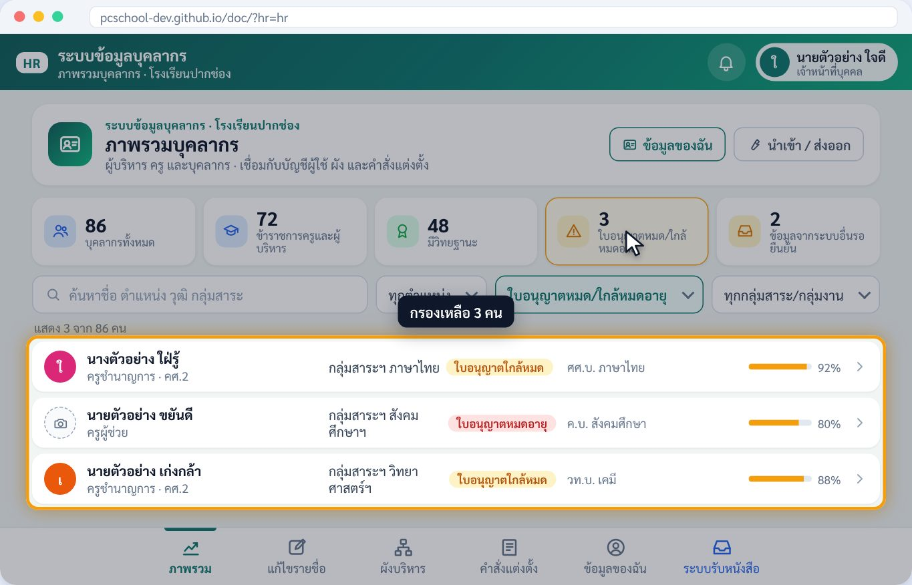
ภาพรวม › ตัวเลขสรุป · แตะการ์ดเพื่อกรอง · แถบ % = ความครบถ้วนของแต่ละคน
เมนูภาพรวมแสดงจำนวนบุคลากร ผู้มีวิทยฐานะ และใบอนุญาตที่หมดหรือใกล้หมดอายุ แตะการ์ดตัวเลขเพื่อกรองรายชื่อ แถบด้านขวาบอกความครบถ้วนของข้อมูลแต่ละคน แตะชื่อเพื่อเปิดดูและแก้รายคน
4.2 แก้ในตาราง
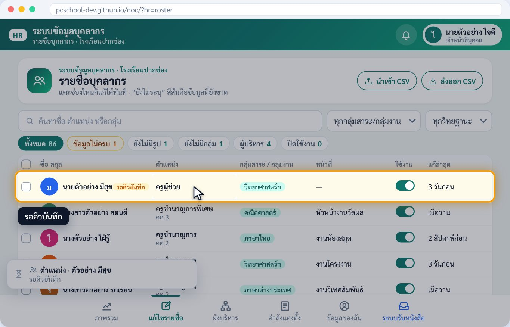
แก้ไขรายชื่อ › แตะช่องไหนก็แก้ได้ · “ยังไม่ระบุ” สีส้ม = ข้อมูลที่ขาด · บันทึกเบื้องหลังเอง
เมนูแก้ไขรายชื่อเป็นตารางของทุกคน แตะช่องไหนก็แก้ได้ทันที คำว่ายังไม่ระบุสีส้ม คือข้อมูลที่ยังขาด เลือกค่าแล้วระบบบันทึกเบื้องหลังให้เอง ทำคนต่อไปได้เลยไม่ต้องรอ
4.3 ตัวกรอง
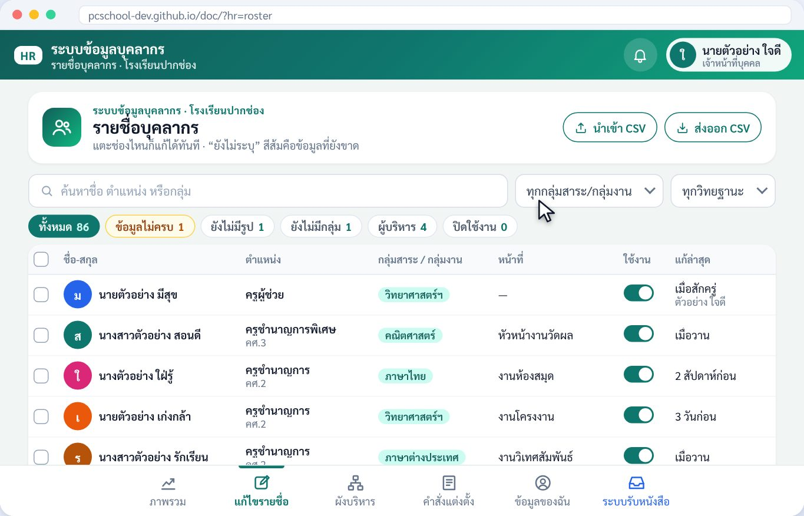
ชิปกรอง: ข้อมูลไม่ครบ · ยังไม่มีรูป · ยังไม่มีกลุ่ม … · ช่องวิทยฐานะ บอกจำนวนแต่ละระดับ
ชิปด้านบนช่วยกรองคนที่ข้อมูลไม่ครบ ยังไม่มีรูป หรือยังไม่มีกลุ่ม ตัวเลขบอกจำนวนคน ส่วนช่องวิทยฐานะ กรองตามวิทยฐานะ พร้อมจำนวนในแต่ละระดับ
4.4 แก้หลายคน
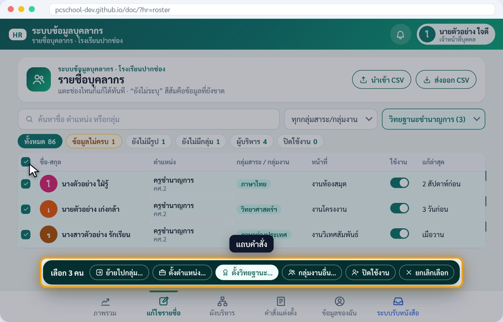
ติ๊กเลือก (หรือติ๊กหัวตาราง = ทั้งหมดที่กรอง) → แถบคำสั่งด้านล่าง → “ตั้งวิทยฐานะ…” → บันทึก
ถ้าต้องแก้หลายคนพร้อมกัน ติ๊กเลือก หรือติ๊กหัวตารางเพื่อเลือกทุกคนที่กรองอยู่ แถบคำสั่งจะขึ้นด้านล่าง เช่น ตั้งวิทยฐานะ เลือกระดับแล้วกดบันทึก แถวจะขึ้นป้ายรอคิวบันทึก แล้วทยอยบันทึกเอง
4.5 แผงรายคน · ปิดใช้งาน
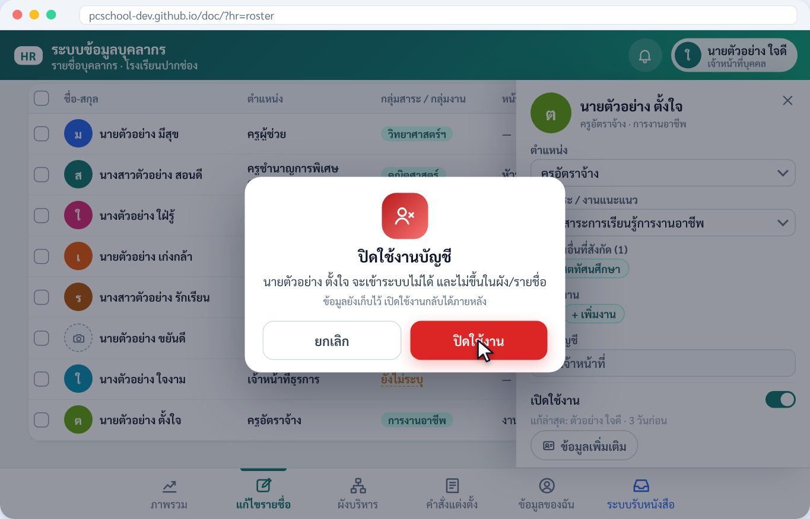
แตะชื่อ → แผงด้านข้าง · ย้ายออก → ปิด “เปิดใช้งาน” = เข้าระบบไม่ได้ ไม่ขึ้นในผัง ข้อมูลยังอยู่
แตะชื่อเพื่อเปิดแผงด้านข้าง แก้ตำแหน่ง กลุ่มสาระ และกลุ่มงานอื่นได้ในที่เดียว ถ้าบุคลากรย้ายออก ให้ปิดสวิตช์เปิดใช้งาน บัญชีนั้นจะเข้าระบบไม่ได้ และไม่ขึ้นในผังหรือรายชื่อ แต่ข้อมูลยังเก็บไว้ครบ
สรุป ดูภาพรวมแล้วแตะตัวเลขเพื่อกรอง แก้ข้อมูลในตารางได้ทันที ใช้ชิปหาคนที่ข้อมูลยังขาด เลือกหลายคนเพื่อแก้พร้อมกัน และเมื่อมีคนย้ายออก ให้ปิดใช้งานแทนการลบ
ตอนนี้มาดูการจัดผังโครงสร้างการบริหาร การดูแลกลุ่มสาระ และการนำเข้าคำสั่งแต่งตั้ง ซึ่งเชื่อมกันทั้งระบบ
5.1 จัดผัง
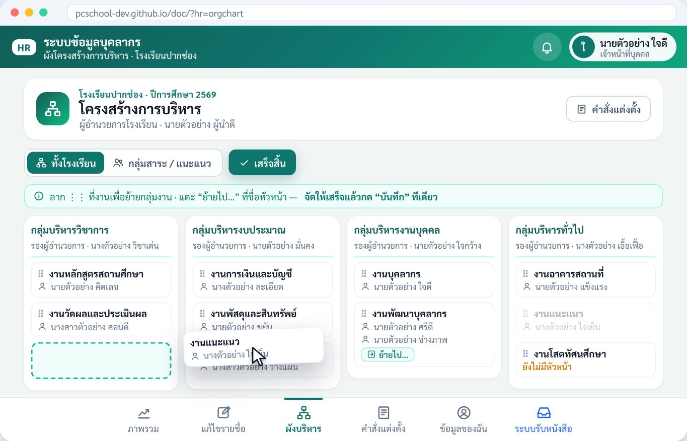
ผังบริหาร › “จัดผัง” → ลากที่จับ ⋮⋮ เพื่อย้ายงานไปกลุ่มอื่น · ยังไม่มีผลจนกว่าจะกดบันทึก
ที่ผังบริหาร กดปุ่มจัดผัง แล้วลากที่จับหน้างาน เพื่อย้ายไปกลุ่มบริหารอื่น หรือเรียงลำดับใหม่ ระหว่างจัดยังไม่มีผลกับใคร จนกว่าจะกดบันทึก
5.2 ย้ายหัวหน้า · บันทึก
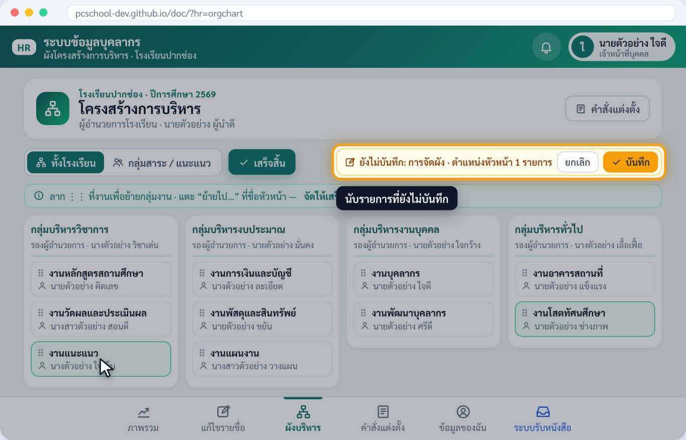
แตะ “ย้ายไป…” ที่ชื่อหัวหน้า → เลือกงานใหม่ · แถบด้านบนนับรายการที่ยังไม่บันทึก → “บันทึก” ทีเดียว
ถ้าจะเปลี่ยนหัวหน้างาน แตะย้ายไปที่ชื่อ แล้วเลือกงานใหม่ แถบด้านบนจะบอกว่ามีอะไรยังไม่บันทึก จัดให้เสร็จแล้วกดบันทึกทีเดียว คำสั่งแต่งตั้งที่ประกาศใช้จะแก้ตามเอง
5.3 ดึงจากคำสั่ง
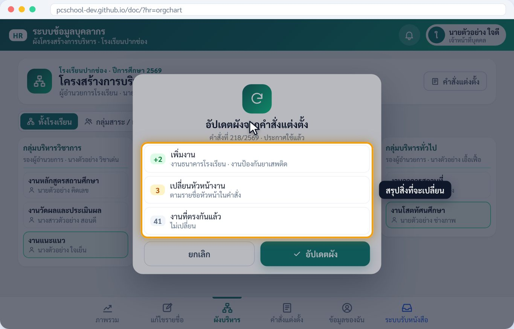
“ดึงจากคำสั่ง” = อัปเดตผังและหัวหน้าจากคำสั่งแต่งตั้งที่ประกาศใช้ · ดูรายการเปลี่ยนก่อนยืนยัน
หรือกดดึงจากคำสั่ง ระบบจะอ่านคำสั่งแต่งตั้งที่ประกาศใช้ แล้วสรุปว่าจะเพิ่มงานหรือเปลี่ยนหัวหน้าตรงไหน ตรวจแล้วค่อยยืนยัน ไม่ต้องกรอกผังซ้ำ
5.4 กลุ่มสาระ
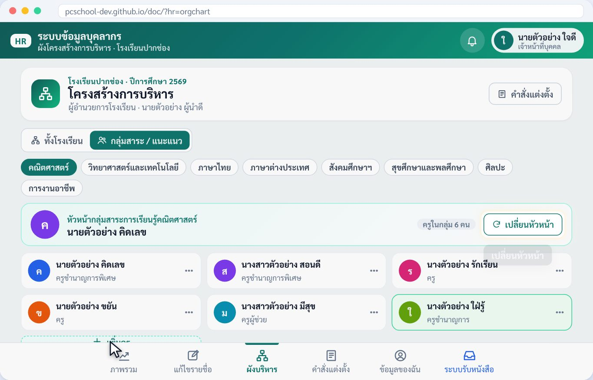
กลุ่มสาระ / แนะแนว › “เพิ่มครู” · “เปลี่ยนหัวหน้า” · ⋮ ที่ชื่อ = ย้ายกลุ่มหรือนำออก
แท็บกลุ่มสาระ ใช้จัดครูในแต่ละกลุ่ม กดเพิ่มครู ค้นชื่อแล้วเลือก หรือกดเปลี่ยนหัวหน้า ส่วนปุ่มสามจุดที่ชื่อ ใช้ย้ายไปกลุ่มอื่นหรือนำออก
5.5 นำเข้าคำสั่ง
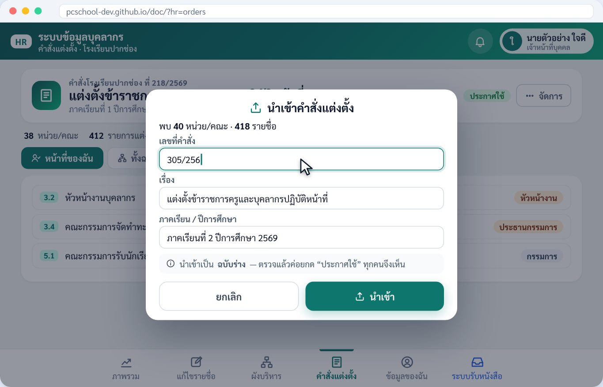
คำสั่งแต่งตั้ง › จัดการ → “นำเข้าคำสั่งใหม่ (Excel)” → เลขที่ · เรื่อง · ภาคเรียน → เข้าเป็น “ฉบับร่าง”
ที่หน้าคำสั่งแต่งตั้ง กดจัดการ แล้วเลือกนำเข้าคำสั่งใหม่จากไฟล์ Excel ระบบบอกจำนวนคณะและรายชื่อที่พบ กรอกเลขที่คำสั่ง แล้วกดนำเข้า คำสั่งจะเข้าเป็นฉบับร่าง ยังไม่มีใครเห็น
5.6 ประกาศใช้
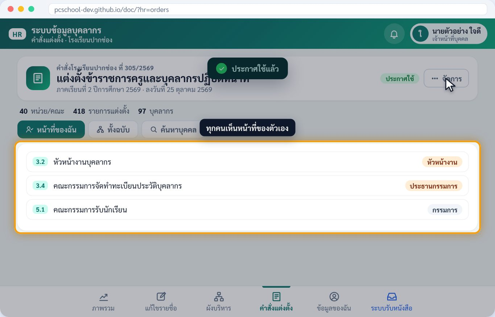
ตรวจฉบับร่างแล้ว › จัดการ → “ประกาศใช้” = ทุกคนเห็นหน้าที่ของตัวเอง · กลับเป็นร่างได้
ตรวจฉบับร่างเรียบร้อยแล้ว กดจัดการ แล้วเลือกประกาศใช้ ครูทุกคนจะเห็นหน้าที่ของตัวเองทันที และถ้าจำเป็นก็กลับเป็นร่างได้
5.7 แก้ไข · ย้อนกลับ
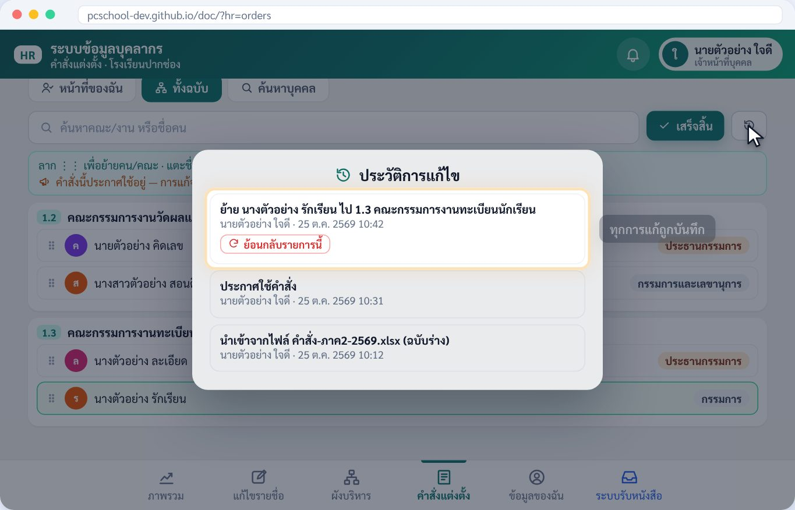
ทั้งฉบับ › “แก้ไข” → ลากย้ายคน/คณะ · แตะชื่อเพื่อแก้ · ⟲ ประวัติการแก้ไข → ย้อนกลับทีละรายการ
ถ้าต้องแก้หลังประกาศ ไปที่แท็บทั้งฉบับ กดแก้ไข แล้วลากย้ายคน หรือแตะชื่อเพื่อแก้ ทุกการแก้ถูกบันทึกในประวัติการแก้ไข และย้อนกลับได้ทีละรายการ
สรุป จัดผังให้เสร็จแล้วกดบันทึกทีเดียว หรือดึงจากคำสั่งแต่งตั้ง คำสั่งใหม่นำเข้าเป็นร่างก่อน ตรวจแล้วจึงประกาศใช้ และทุกการแก้ย้อนกลับได้
ตอนสุดท้ายนี้ มาดูงานข้อมูลของเจ้าหน้าที่บุคคล ทั้งการยืนยันข้อมูลจากระบบอื่น การส่งออกและนำเข้าไฟล์ การอ่านเอกสาร และการเชื่อมต่อระบบอื่น
6.1 รอยืนยัน
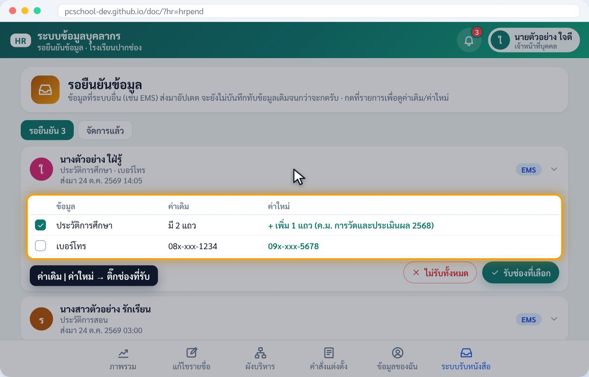
กระดิ่ง → “ดูทั้งหมด / จัดการแล้ว” › แตะรายการ = ค่าเดิม | ค่าใหม่ → ติ๊ก → “รับช่องที่เลือก”
เมื่อระบบอื่นส่งข้อมูลมา กระดิ่งจะขึ้นตัวเลข กดดูทั้งหมด จะเห็นรายการรอยืนยันของทุกคน แตะรายการเพื่อเทียบค่าเดิมกับค่าใหม่ ติ๊กช่องที่รับแล้วกดยืนยัน รายการจะย้ายไปแท็บจัดการแล้ว พร้อมชื่อผู้ตัดสิน
6.2 ส่งออก CSV
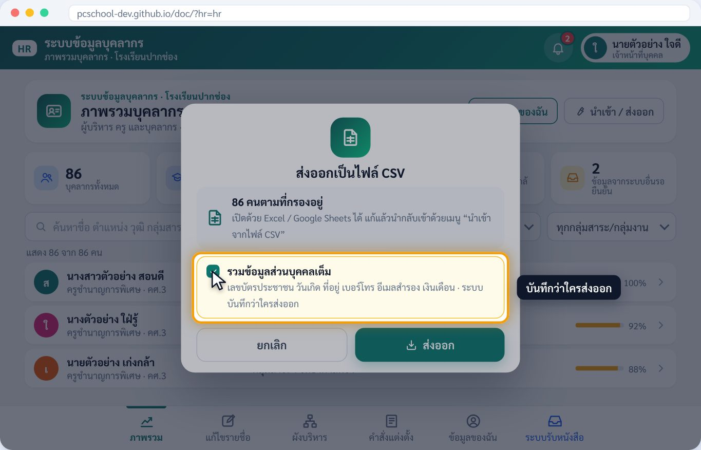
ภาพรวม › นำเข้า / ส่งออก → “ส่งออกเป็นไฟล์ CSV” · ส่งตามที่กรองอยู่ · ข้อมูลส่วนบุคคลเต็ม = บันทึกว่าใครส่งออก
ที่หน้าภาพรวม กดนำเข้าส่งออก แล้วเลือกส่งออกเป็นไฟล์ CSV ระบบส่งออกเฉพาะคนที่กรองอยู่ ปกติข้อมูลส่วนบุคคลจะถูกปิดบัง ถ้าติ๊กรวมข้อมูลเต็ม ระบบจะบันทึกว่าใครส่งออก
6.3 นำเข้า CSV
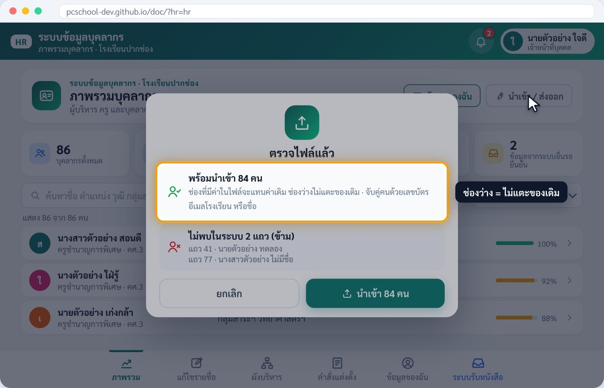
นำเข้าจากไฟล์ CSV › ตรวจก่อนเสมอ · ช่องว่าง = ไม่แตะของเดิม · จับคู่ด้วยเลขบัตร อีเมล หรือชื่อ
จะแก้ทีละมาก ๆ ให้ดาวน์โหลดแม่แบบ หรือใช้ไฟล์ที่ส่งออก แก้ใน Excel แล้วนำเข้า ระบบตรวจไฟล์ก่อนเสมอ ช่องที่เว้นว่างจะไม่ทับของเดิม และจับคู่คนด้วยเลขบัตร อีเมลโรงเรียน หรือชื่อ แถวที่หาไม่พบจะถูกข้าม
6.4 อ่านจาก PDF / รูป
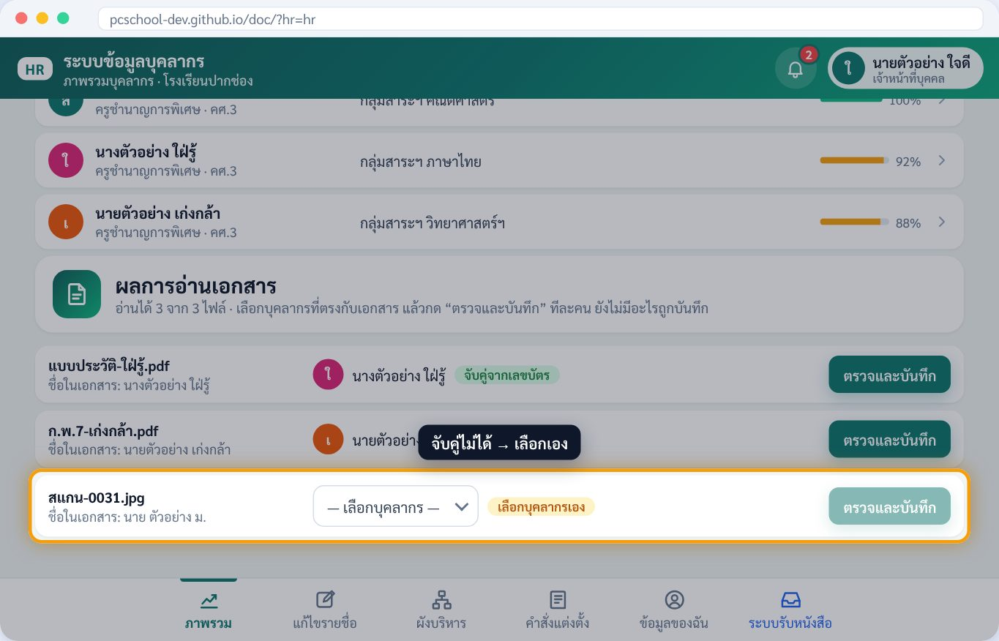
อ่านข้อมูลจากไฟล์ PDF / รูป › เลือกได้หลายไฟล์ · จับคู่บุคลากรให้ → “ตรวจและบันทึก” ทีละคน
ถ้ามีแบบประวัติเดิมเป็นไฟล์ เลือกอ่านข้อมูลจากไฟล์ PDF หรือรูป เลือกได้ทีละหลายไฟล์ ระบบจับคู่กับบุคลากรจากเลขบัตรหรือชื่อ แล้วกดตรวจและบันทึกทีละคน ยังไม่มีอะไรถูกบันทึกจนกว่าจะยืนยัน
6.5 เชื่อมต่อระบบอื่น
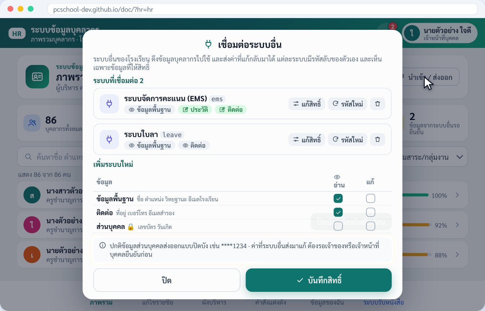
เชื่อมต่อระบบอื่น › แต่ละระบบมีรหัสลับของตัวเอง · กำหนดสิทธิ์ อ่าน / แก้ ทีละกลุ่มข้อมูล · ข้อมูลส่วนบุคคลปิดบังเป็นค่าเริ่มต้น
ผู้ได้รับสิทธิ์เชื่อมต่อระบบอื่น จะเห็นรายการระบบที่เชื่อมอยู่ เช่น EMS แต่ละระบบมีรหัสลับของตัวเอง และกำหนดได้ว่าอ่านหรือแก้ข้อมูลกลุ่มไหน ข้อมูลส่วนบุคคลถูกปิดบังเป็นค่าเริ่มต้น และค่าที่ส่งมาแก้ ต้องผ่านการยืนยันก่อน
สรุป ตรวจรายการรอยืนยันจากกระดิ่ง ส่งออกและนำเข้า CSV ได้โดยระบบตรวจให้ก่อน อ่านแบบประวัติเดิมได้ทีละหลายไฟล์ และเชื่อมต่อระบบอื่นแบบกำหนดสิทธิ์ได้
ชื่อบุคคลและข้อมูลในภาพเป็นข้อมูลตัวอย่าง ไม่ใช่ข้อมูลจริงของบุคลากร · งานพัฒนาและบริการระบบดิจิทัลโรงเรียน (DSDS)